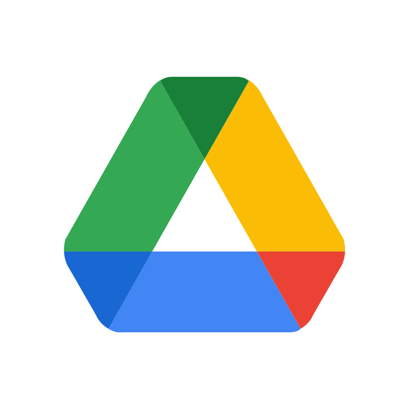
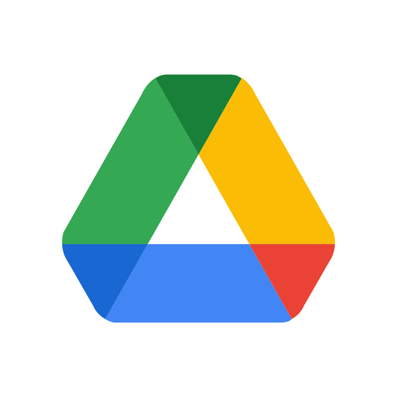

×


Project Management
Managing multiple client projects using collaborative tools to improve task visibility, accountability, and delivery timelines. I use platforms like Asana, Notion, and ClickUp to build intuitive dashboards and progress trackers.


 
